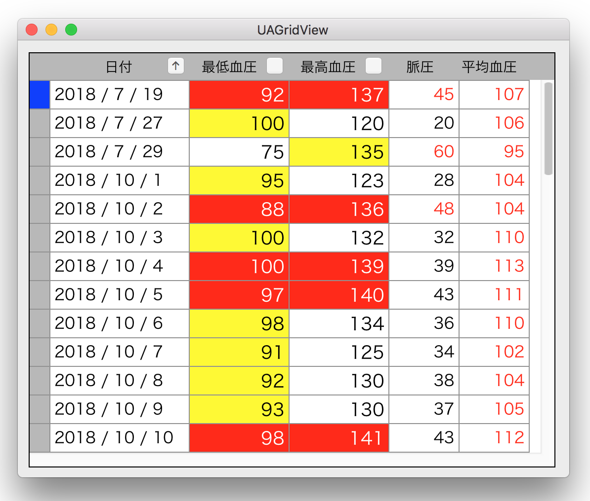

一覧表を作成する（３） 条件によりセルの属性を変える
行のレコードの値を条件に、特定の要素の表示値の文字色/背景色を変えることができる。条件は複数の列の値を対象とすることができる。
上記サンプルでは、[脈圧] [平均血圧] は、それぞれの値が基準値以上になったら文字を赤色にしている。[最低血圧] [最高血圧] の背景色は、最低血圧と最高血圧のいずれかが基準値以上になったら黄色にし、両方とも超えていたら赤色としている。
また列の値を整形して表示することができる。[日付] は年月日の間にスラッシュを挿入している。

画像をクリックすると動画になります。
条件によりセルの属性を変える方法
セルの作成の際にクロージャを呼ぶ。クロージャは、レコード変数の値に応じたセルの属性（文字色、背景色）や、表示文字列を編集して返すので、それを列の属性に設定する。
クロージャ定義 GridDefinition.swift
次の例は、最低血圧が85以上で最高血圧が135以上の場合、それぞれの血圧の背景色を赤にするものである。二値を判定するものである。
クロージャの実装 AppDelegate.swift
セルの編集（クロージャの呼び出し） UAGridObject.swift